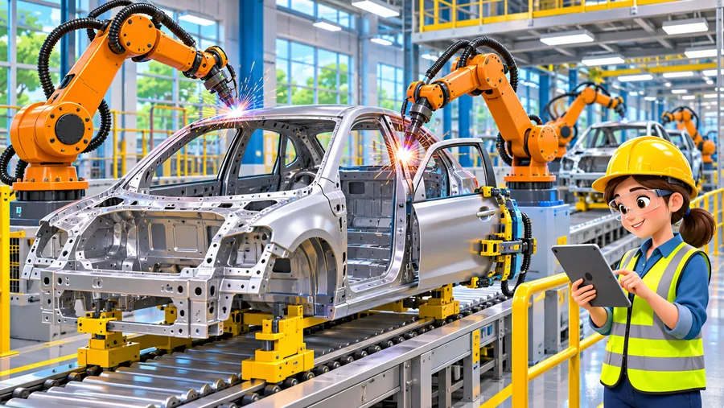

Cánh tay rô-bốt trong nhà máy

Chạm để xem ảnh lớnEm có biết trong một số nhà máy, những cánh tay máy có thể làm việc rất nhanh và chính xác không?
Cánh tay rô-bốt được lập trình để thực hiện các công việc như hàn, sơn, lắp ráp hoặc nâng chuyển đồ vật. Chúng có thể lặp lại một thao tác nhiều lần với độ chính xác cao. Nhờ vậy, một số công việc nặng nhọc, nguy hiểm hoặc cần sự đều đặn được thực hiện nhanh và ổn định hơn. Tuy nhiên, rô-bốt không tự làm mọi việc. Con người vẫn cần thiết kế chương trình, điều khiển, kiểm tra và bảo dưỡng máy móc để chúng hoạt động an toàn.
Cùng suy nghĩ nhé!
- Rô-bốt trong nhà máy thường hỗ trợ những công việc nào?
- Vì sao con người vẫn cần kiểm tra hoạt động của rô-bốt?
Điều thú vị
Một cánh tay rô-bốt công nghiệp có thể lặp lại cùng một thao tác hàng nghìn lần.
Nguồn tham khảo: International Federation of Robotics – Industrial Robots